©2010 Emerald Diving, All Rights Reserved
Dive Reports
Emerald Diving
Explore the coastal and inland waters of
Washington and BC
Explore the coastal and inland waters of
Washington and BC
Emerald Diving
Explore the coastal and inland waters of
Washington and BC
Explore the coastal and inland waters of
Washington and BC
Emerald Diving
Explore the coastal and inland waters of
Washington and BC
Explore the coastal and inland waters of
Washington and BC


God Pocket Resort: Much more than an incredible diving experience
Port Hardy Area/God's Pocket Resort
04.06.10 - 04.10.10
04.06.10 - 04.10.10

Divng with stellar sea lions just never gets old. Proprietor of God's Pocket Resort, Bill Weeks, has scoped out a rather social community of playful stellar sea lions that likes to engage with divers.
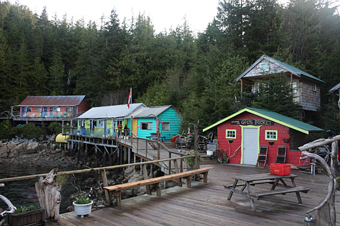
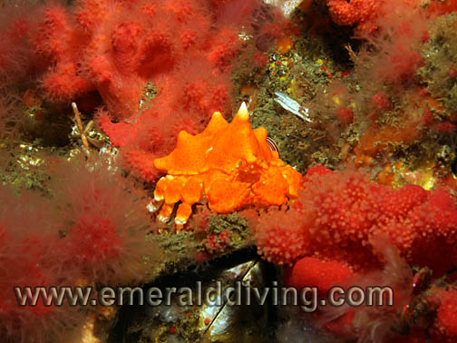
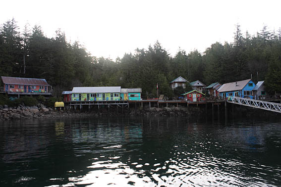
The colorful lodge highlights the shoreline of God's Pocket. The main dining hall is the blue building on the right.
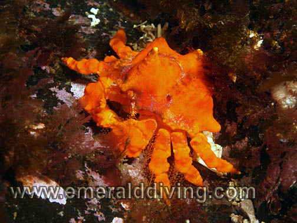
Puget Sound king crabs are common at most dives in the Port Hardy area. Juveniles are typically bright orange (bottom left). As the crab matures, it starts to take on red color (bottom right). If the crab is lucky enough to not be devoured by an octopus and make it to adulthood, the crab's carapace assumes the familiar reddish color (top).
Everyone initially comes to God’s Pocket Resort for legendary cold water diving. Everyone comes back for the experience of staying at God’s Pocket Resort. This little bay on Hurst Island earned its name and reputation with early sailors as a sheltered sanctuary from wicked winds and storms that would plague the Queen Charlotte Strait. Bill and Annie Weeks, the proprietors of God’s Pocket Resort, have taken it upon themselves to continue the tradition of making God’s Pocket a very special place.
I was a God’ Pocket regular from 2000 to 2005. The diving duing that six year stretch ranged from exploring diverse and fantastic sites in 70+ feet of vis to occasionally poking my way through urchins in 5 feet of vis. Regardless of the diving conditions, I was constantly drawn to this part of the world year after year by the God’s Pocket Resort experience.
After a five year hiatus, I finally woke up and realized I was spending way too much time at work and needed to catch up with life. God’s Pocket Resort immediately came to mind. I scheduled a five day trip for the first charter of the 2010 season with my good dive buddy Jon. Scheduling a trip to the north tip of Vancouver Island in early April is risky because of weather. My hope was Mother Nature would afford us enough of a break in the weather for us to get out of the Browning Pass area and explore some of the more remote dive sites in the Queen Charlotte Strait and get the most out of the incredible underwater visibility which is traditional in the Port Hardy area this time of year. Sometimes gambling on Mother Nature like this backfires. This year, it paid off.
I was a God’ Pocket regular from 2000 to 2005. The diving duing that six year stretch ranged from exploring diverse and fantastic sites in 70+ feet of vis to occasionally poking my way through urchins in 5 feet of vis. Regardless of the diving conditions, I was constantly drawn to this part of the world year after year by the God’s Pocket Resort experience.
After a five year hiatus, I finally woke up and realized I was spending way too much time at work and needed to catch up with life. God’s Pocket Resort immediately came to mind. I scheduled a five day trip for the first charter of the 2010 season with my good dive buddy Jon. Scheduling a trip to the north tip of Vancouver Island in early April is risky because of weather. My hope was Mother Nature would afford us enough of a break in the weather for us to get out of the Browning Pass area and explore some of the more remote dive sites in the Queen Charlotte Strait and get the most out of the incredible underwater visibility which is traditional in the Port Hardy area this time of year. Sometimes gambling on Mother Nature like this backfires. This year, it paid off.
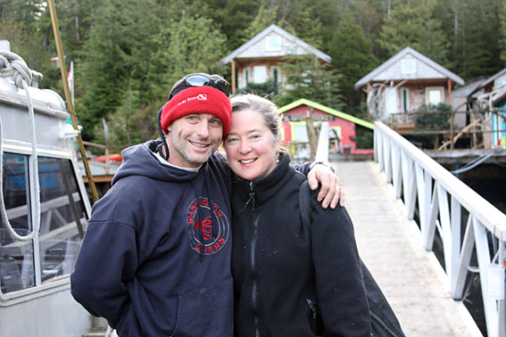
God’s Pocket combines the best of live-aboard and land-based diving. Being land based, you are free to take hikes on secluded Hurst Island to stretch your legs, beachcomb, find some personal space, and have a cozy but un-cramped cabin completed with it's own bathroom, heat, and shower. The close proximity of God’s Pocket to legendary Browning Pass and several other well-known dive sites in this area allows for three boat dives a day. And if that isn’t enough, you can jump off the dock at God’s Pocket for a bay dive night dive.
The resort is intentionally laid back and a bit rustic. It is also a perpetual project. Every time I visit, I find new additions to the resort. Some part of the resort is seemingly always under construction by master craftsmans, Bill Weeks. The resort is self-sufficient and processes its own water from a spring on the island and is powered by a wind turbine, propane, and diesel-electric. Don’t expect 5-star accommodations, daily fresh linens, Mayan artworks on the boardwalks, and on-demand sterling silver platter room service when staying here. Do expect cozy, comfortable, clean, relaxing, and functional. God’s Pocket Resort is definitely a well-grounded establishment.
The same philosophy applies to the resort's 41 foot dive boat, the Hurst Isle. The Hurst Isle is a well traveled but very capable all-aluminum vessel that Bill has converted over the years into a practical and functional dive vessel well suited for the area. Re-engined in 2005 with twin Cat diesels, she now boast about 800 HP and can scoot quickly across the strait to remote dive sites, weather permitting. Although a bit rough around the edges, everyone seems to adore this dive boat that has become a God’s Pocket icon. Equipped with a heated cabin, twin rear dive ladders, a collapsible water-level dive platform, and an on-board Nitrox cascade, the Hurst Isle continues to prove herself very capable of delivering incredible diving to hundreds of divers each season.
What is 5-star at God’s Pocket Resort (other than the diving) is the hospitality and food. Bill and Annie have done an outstanding job over the years selecting incredibly talented chefs, including Annie herself on occasion. Food is good, wholesome, incredibly well prepared, and plentiful. Rest assured, you will not go hungry during your stay at God’s Pocket. Three meals were served in the dining hall each day unless we did two morning dives on the boat - in which case we took a pack lunch with us. All meals in the dining hall were served family style. Breakfasts and lunches were hearty and warm, and dinners during my stay included wonderful salmon, steak, lamb, and chicken entrees. Although a number of talented chefs rotate through God’s
The resort is intentionally laid back and a bit rustic. It is also a perpetual project. Every time I visit, I find new additions to the resort. Some part of the resort is seemingly always under construction by master craftsmans, Bill Weeks. The resort is self-sufficient and processes its own water from a spring on the island and is powered by a wind turbine, propane, and diesel-electric. Don’t expect 5-star accommodations, daily fresh linens, Mayan artworks on the boardwalks, and on-demand sterling silver platter room service when staying here. Do expect cozy, comfortable, clean, relaxing, and functional. God’s Pocket Resort is definitely a well-grounded establishment.
The same philosophy applies to the resort's 41 foot dive boat, the Hurst Isle. The Hurst Isle is a well traveled but very capable all-aluminum vessel that Bill has converted over the years into a practical and functional dive vessel well suited for the area. Re-engined in 2005 with twin Cat diesels, she now boast about 800 HP and can scoot quickly across the strait to remote dive sites, weather permitting. Although a bit rough around the edges, everyone seems to adore this dive boat that has become a God’s Pocket icon. Equipped with a heated cabin, twin rear dive ladders, a collapsible water-level dive platform, and an on-board Nitrox cascade, the Hurst Isle continues to prove herself very capable of delivering incredible diving to hundreds of divers each season.
What is 5-star at God’s Pocket Resort (other than the diving) is the hospitality and food. Bill and Annie have done an outstanding job over the years selecting incredibly talented chefs, including Annie herself on occasion. Food is good, wholesome, incredibly well prepared, and plentiful. Rest assured, you will not go hungry during your stay at God’s Pocket. Three meals were served in the dining hall each day unless we did two morning dives on the boat - in which case we took a pack lunch with us. All meals in the dining hall were served family style. Breakfasts and lunches were hearty and warm, and dinners during my stay included wonderful salmon, steak, lamb, and chicken entrees. Although a number of talented chefs rotate through God’s
Looking north across the large sundeck. The clubhouse and 8 cabins are in the background. One of the newer cabins is located behind the red utiltiy shed.
Bill and Annie Weeks - you would be hard pressed to find two better hosts - anywhere.
Pocket throughout the season, the young chef we had preparing our meals during this trip was absolutely top notch. Although I fully intended to pass up all deserts during my stay, I was finally broken down on day three by a wonderful slice of apple pie. My dessert weakness continues right through day six which saw me polished of an incredibly irresistible slice of pecan pie. Trevor, my taste buds thank you, but my waist-line does not echo the same sentiment.
For those who want a bit of variety in their activities, God’s Pocket Resort offers hiking and kayaking. Other than the resort, Hurst Island is uninhabited and offers some spectacular hikes and beautiful vistas. If paddling is more to your liking than hiking, God's Pocket has two kayaks readily available for paddling tours around the island. In fact, God’s Pocket Resort caters specifically to kayakers in July when plankton blooms tend to be at their peak.
Although God’s Pocket promotes a very relaxed atmosphere, there are some things to know:
For those who want a bit of variety in their activities, God’s Pocket Resort offers hiking and kayaking. Other than the resort, Hurst Island is uninhabited and offers some spectacular hikes and beautiful vistas. If paddling is more to your liking than hiking, God's Pocket has two kayaks readily available for paddling tours around the island. In fact, God’s Pocket Resort caters specifically to kayakers in July when plankton blooms tend to be at their peak.
Although God’s Pocket promotes a very relaxed atmosphere, there are some things to know:
· Alcohol is permitted. However your first sip of alcohol ends your diving for that day, no exceptions. This is a good rule anywhere.
· As alluded to earlier, God’s Pocket Resort provides Nitrox fills for an extra $10 per fill. Air fills are free.
· The resort will gladly provide you bulk weights, weight belts, and LP steel 85 tanks free of charge. No reason to tote your own unless you want to.
· This part of the world is far north. Days are long in April through summer, but they start to get short after the autumnal equinox, particularly come mid to late October.
· Weather in this part of the world is a true crapshoot. Even when winds are howling at 50 knots, Bill can still get you diving on parts of spectacular Browning Pass. However, not all sites are accessible all the time due to wind, current, weather, and swell. The weather often changes dramatically from day to day - and sometimes even hour to hour. Rest assured, Bill will put you on the best dives he can every day, given conditions.
· Underwater visibility can vary tremendously. The best visibility tends to be in April and October - when the weather is the most unstable. I have seen days with 80 feet of underwater visibility, and days of 5 feet on rare occasion. I expect about 35-45 feet of vis when I come up here.
· Bill rightfully enforces a no take policy of any marine life when diving. This area is a true treasure and needs to be left as is.
· Most dives are not timed, which I really like. You can stay down as long as you like as long as you do your safety stop with 500 psi in your tank.
· God’s Pocket does not provide junk food. If you want candy and pop, bring it. Otherwise, you will have to survive on lemonade, water, ice tea, piping hot tea, coffee, and hot chocolate - and for your sweet tooth, scrumptious freshly baked cookies and delectable deserts. Sounds tough, doesn’t it?
· Water temps are typically in the 45 to 50 degree range. Suit up accordingly!
· It takes a good ten hours to get up here from Seattle. In addition to crossing the US-Canada border, the trek north requires a two hour ferry ride on the Tsawwassen-Duke Point ferry, then another 4+ hours in the car north to Port Hardy to meet the boat. Once at the boat, its only about a 45 minute cruise to God’s Pocket Resort. It is actually faster to get to Hawaii!!
· There is no cell reception or Internet connection at the resort. Now that's paradise!!
· As alluded to earlier, God’s Pocket Resort provides Nitrox fills for an extra $10 per fill. Air fills are free.
· The resort will gladly provide you bulk weights, weight belts, and LP steel 85 tanks free of charge. No reason to tote your own unless you want to.
· This part of the world is far north. Days are long in April through summer, but they start to get short after the autumnal equinox, particularly come mid to late October.
· Weather in this part of the world is a true crapshoot. Even when winds are howling at 50 knots, Bill can still get you diving on parts of spectacular Browning Pass. However, not all sites are accessible all the time due to wind, current, weather, and swell. The weather often changes dramatically from day to day - and sometimes even hour to hour. Rest assured, Bill will put you on the best dives he can every day, given conditions.
· Underwater visibility can vary tremendously. The best visibility tends to be in April and October - when the weather is the most unstable. I have seen days with 80 feet of underwater visibility, and days of 5 feet on rare occasion. I expect about 35-45 feet of vis when I come up here.
· Bill rightfully enforces a no take policy of any marine life when diving. This area is a true treasure and needs to be left as is.
· Most dives are not timed, which I really like. You can stay down as long as you like as long as you do your safety stop with 500 psi in your tank.
· God’s Pocket does not provide junk food. If you want candy and pop, bring it. Otherwise, you will have to survive on lemonade, water, ice tea, piping hot tea, coffee, and hot chocolate - and for your sweet tooth, scrumptious freshly baked cookies and delectable deserts. Sounds tough, doesn’t it?
· Water temps are typically in the 45 to 50 degree range. Suit up accordingly!
· It takes a good ten hours to get up here from Seattle. In addition to crossing the US-Canada border, the trek north requires a two hour ferry ride on the Tsawwassen-Duke Point ferry, then another 4+ hours in the car north to Port Hardy to meet the boat. Once at the boat, its only about a 45 minute cruise to God’s Pocket Resort. It is actually faster to get to Hawaii!!
· There is no cell reception or Internet connection at the resort. Now that's paradise!!
The Diving
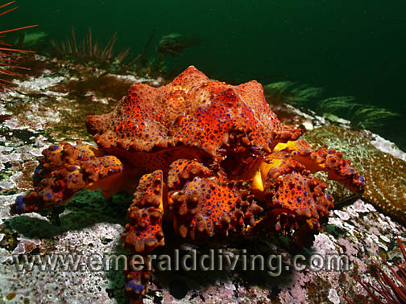
When conditions are good, the diving in this part of the world is as spectacular as anywhere. Bill has about 20 sites that he regularly frequents and knows extremely well. Bill is very adept at reading the currents and conditions at each of these sites and always strives to give you the best possible dive each time out. I took this for granted until I had the opportunity to do two days diving in the Port Hardy area with the Nautilus Explorer. In the Nautilus Explore’s defense, they don’t dive this area much, and it showed. We got in some decent (and some not so decent) dives. But if you REALLY want to experience the best of Port Hardy diving, you need to charter with someone like Bill.
Here are just a few of my favorite Port Hardy area sites:
HUNT ROCK
This is my favorite site in the area. I could dive this site every day when staying here. This site is actually a remote rock pinnacle in the Queen Charlette Strait, just north of Browning Pass. It is very exposed and susceptible to swell, so diving this site on any given day is far from a certainly. What makes this site so special for me is the following:
· Yelloweye rockfish. I have been visiting a large adult resident yelloweye here for many years now. He (or she) is about 30” long and perhaps over 100 years old. I always find him in or near the same fissure on the north side of the reef in about 90 feet of water. He is very timid when he is the center of attention and will quickly retreat into a deep fissure, but will actually come over and check you out if he can see you are focused on something else.
· Wolf-eels!! I regularly find wolf-eels at this site. A large resident male used to live under the huge boulder in the ravine on the reef right above the wall, but he was not present this last trip. Instead, I found two others deeper on the wall at around 90 feet.
· INCREDIBLE schools of rockfish. Benthic tiger, copper, China, and quillback rockfish are all found here in good abundance. But it is the pelagic rockfish that are just off the charts! Black, yellowtail, blue, and widow rockfish all congregate at this site in mass. I often find large schools hovering off the wall in about 50 feet of water. My favoriate way to end my dive is on top of the reef in 15 feet of water and just hang with a dense school of black and yellowtail rockfish in the kelp. When the sun is shining, it makes for some awesome photographs. No wonder I always end up doing 25 minute safety stops at this site! If you are lucky enough to get to dive Hunt Rock, keep a lookout for two albino blue rockfish in the mix; they are predominately white. Although I did not see them this trip, Bill assured me they were still around at the end of last year.
· Wolf-eels!! I regularly find wolf-eels at this site. A large resident male used to live under the huge boulder in the ravine on the reef right above the wall, but he was not present this last trip. Instead, I found two others deeper on the wall at around 90 feet.
· INCREDIBLE schools of rockfish. Benthic tiger, copper, China, and quillback rockfish are all found here in good abundance. But it is the pelagic rockfish that are just off the charts! Black, yellowtail, blue, and widow rockfish all congregate at this site in mass. I often find large schools hovering off the wall in about 50 feet of water. My favoriate way to end my dive is on top of the reef in 15 feet of water and just hang with a dense school of black and yellowtail rockfish in the kelp. When the sun is shining, it makes for some awesome photographs. No wonder I always end up doing 25 minute safety stops at this site! If you are lucky enough to get to dive Hunt Rock, keep a lookout for two albino blue rockfish in the mix; they are predominately white. Although I did not see them this trip, Bill assured me they were still around at the end of last year.
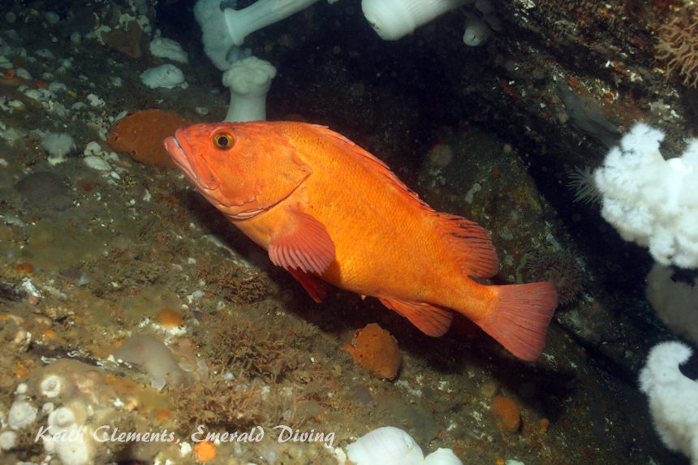
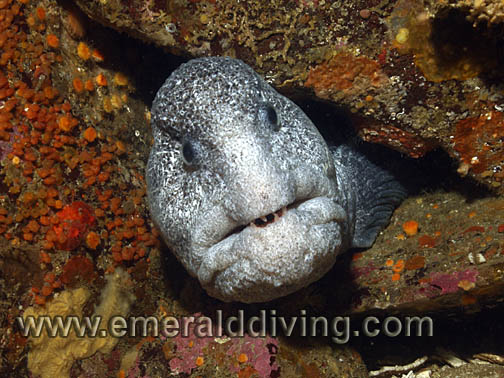
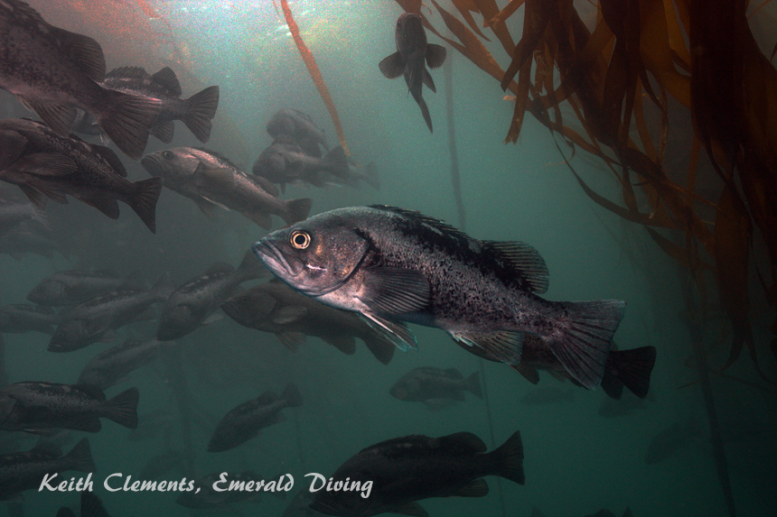
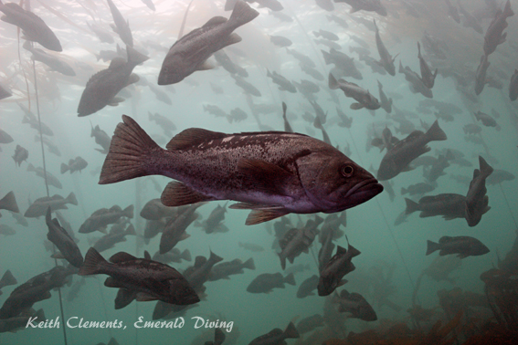
Top: Resident adult yelloweye rockfish
Middle: Wolf eel
Bottom : Black Rockfish
Middle: Wolf eel
Bottom : Black Rockfish
NAKWAKTO RAPIDS
Nakwakto Rapids is a narrow channel on the mainland side of the Queen Charlette Strait. Tidal currents of up to 20 knots can rip through this channel. Bill targets several dives in this area, including the
outer channel
, Johnson Point, and Turret Island. As the outer channel was awash in swell during my trip, we fell back to Johnson Point and dove it at slack. The highlight of this dive are the unique colonies of gooseneck barnacles that sport a bright red coloration. Gooseneck barnacles tend to live near the surface in the high swell areas and use the swell to deliver them food. These colonies live in 40-50 feet of water and uses the strong current instead of swell as their food-delivery mechanism. Not located anywhere near the surface, Nakwakto goosenecks have lost the pigment protecting them from the sun’s rays. The result is the normally dark purple marking on the shell are bright red. The red color is attributed to the animal’s blood being visible through the pigment free membranes. Although the fields of goosenecks at Johnson Point are not as massive as those around Turret Island, they are still incredibly spectacular.
In addition to goosenecks, impressively large colonies of northern feather duster worms and giant acorn barnacles grace the rocky substrate along this point and provide a sanctuary for small fish and other invertebrates. This is site is truly a spectacle.
After our dive at slack, Bill let us suit up with snorkel gear and jump in to the raging current around Turret Island during our surface interval. What a ride!
In addition to goosenecks, impressively large colonies of northern feather duster worms and giant acorn barnacles grace the rocky substrate along this point and provide a sanctuary for small fish and other invertebrates. This is site is truly a spectacle.
After our dive at slack, Bill let us suit up with snorkel gear and jump in to the raging current around Turret Island during our surface interval. What a ride!
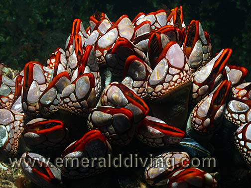

The unusual bright red color of the Nakwakto gooseneck barnacles makes them a unique spectacle for Pacific Northwest divers.
STELLAR SEA LION DIVE - MIDDLE GROUP
This dive is just a hoot. As the name suggests, this dive site is nestled next to a stellar sea lion colony in a small collection of islands known as the Middle Group in the Queen Charlette Strait. If the sea lions are lounging on the rocks, there is a very good chance that curiosity will get the better of some of the younger sea lions and they will jump in and spend a good deal of time checking you out. I have a similar dive I do at Neah Bay, but diving with a group of playful stellar sea lions just never gets old. This dive is not for everyone - these magnificent acrobats can weight in excess of 1500 pounds and can be quite intimidating. Also note that sea lions cannot smell underwater, so they often bite and taste things they are curious about. This is OK for fins, but not OK for fingers and regulator hoses.

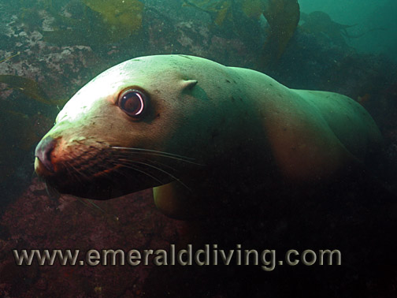
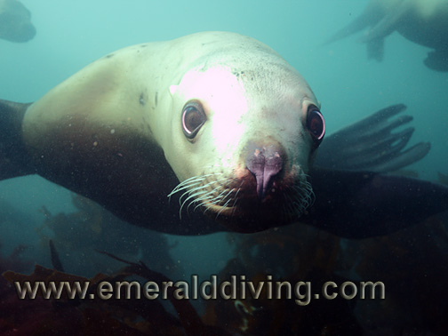
Diving with a group pf playful sealions is about as much fun as you can have underwater - or anywhere for that matter. The stellars that joined us on our dive were very well behaved and all young males or females. Things sometimes get much more interesting when the bulls decide to join tha party.
CASTLE GAP
Castle Gap is also located in the Middle Group. Bill likes to do this dive as a follow-up to the sea lion dive. The first part of this dive is a very nice drift through fields of giant acorn barnacles, plumose anemones, and other invertebrates. The drift looses momentum and washes out on some absolutely stunning walls that give Browning Wall a run for its money. Incredible colonies of dense and diverse invertebrate smother sections of these walls, including bright red fields of sea strawberries and fluorescent crimson anemones. The largest orange peel nudibranchs I have ever seen live here. Given the abundance of their favorite food, sea strawberries, that is no surprise. Also look for good sized candy stripe shrimp on the crimson anemones. I could literally spend hours at this site poking through the countless creatures that make this wall home.
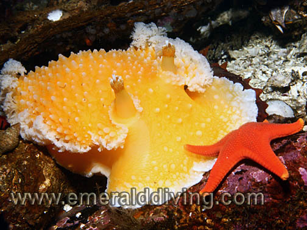
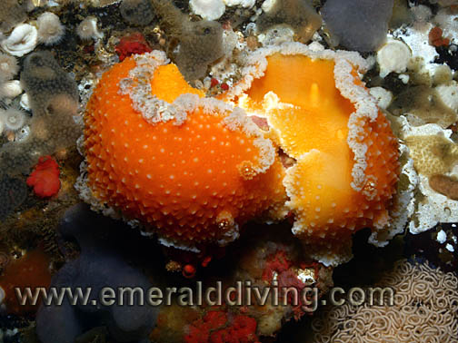
Orange peel nudibranchs at Castle Gap
BROWNING WALL
Browning Wall is the signature dive in this area, and for good reason. This 200 foot high wall defines the pinnacle of cold-water invertebrate diving and serves as the measuring stick for all other cold-water dives. The wall is located on the west side of well-protected Browning Pass.
Invertebrate colonies grow so thick on this wall that they often layered on top of each other. Sections of the wall are dominated by white metridium, but huge expanses boast bold reds, oranges, yellows, purples, and browns. Expect to see mass amounts of sea strawberries, finger sponges, peach ball sponges, crimson anemones and sulfur sponges. A careful eye will catch plenty of candy-stripe shrimp, butterfly crabs, basket stars, and even the odd grunt sculpin and decorated warbonnet. Don't forget to look for juvenile widow, yellowtail, black and Puget Sound rockfish schooling off the wall. It is easy to get caught up in all the color on the wall and not look out into the green from time to time.
You can go as deep as you dare on this wall, but the best dive is typically from 20-70 feet. I been lucky enough to dive Browning Wall 18 times, and I still get excited before diving this legend.
Invertebrate colonies grow so thick on this wall that they often layered on top of each other. Sections of the wall are dominated by white metridium, but huge expanses boast bold reds, oranges, yellows, purples, and browns. Expect to see mass amounts of sea strawberries, finger sponges, peach ball sponges, crimson anemones and sulfur sponges. A careful eye will catch plenty of candy-stripe shrimp, butterfly crabs, basket stars, and even the odd grunt sculpin and decorated warbonnet. Don't forget to look for juvenile widow, yellowtail, black and Puget Sound rockfish schooling off the wall. It is easy to get caught up in all the color on the wall and not look out into the green from time to time.
You can go as deep as you dare on this wall, but the best dive is typically from 20-70 feet. I been lucky enough to dive Browning Wall 18 times, and I still get excited before diving this legend.
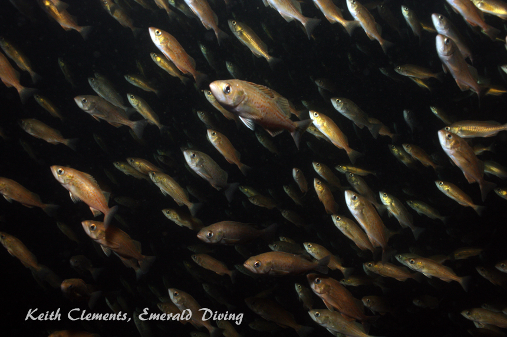

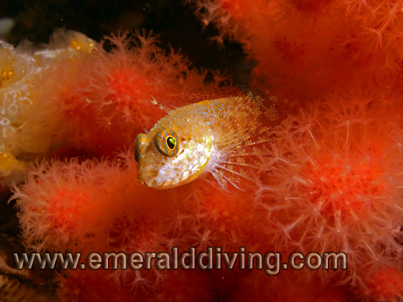
Top right: Deadman finger sponge surrounded by an ocean of red sea strawberries.
Top left: Schooling widow rockfish often school.
Left: A sculpin takes sanctuary in a cloud of sea strawberries.
Top left: Schooling widow rockfish often school.
Left: A sculpin takes sanctuary in a cloud of sea strawberries.
BUTTER TART REEF
Don’t ask me how this site got it’s name - ask Bill. I think Bill likes butter tarts, whatever they are. This is one of the dives near the north end of Browning Pass. The reef is exposed at one end, but not at the other. The saddle between the two ends drops to about 70 feet. I prefer to dive the outside wall of this reef. The north end is a bit generic and dominated by white plumose anemones. The south end is rich in bright yellow sulfur sponges, colonies of red sea strawberries, white metridium, and towering finger sponges.
Like Browning Wall, the small fish and invertebrate life living on this sheer wall is amazing and diverse. I thoroughly enjoy this part of the dive, but also like to drop down to the rocky knuckle at the south end of the wall that starts at about 90 feet. The boulders making up the knuckle provide better habitat for larger fish and other creatures not found on the wall. Crimson anemones, rockfish, and candy stripe shrimp are but a few of the residents you should expect to meet on the knuckle.
Like Browning Wall, the small fish and invertebrate life living on this sheer wall is amazing and diverse. I thoroughly enjoy this part of the dive, but also like to drop down to the rocky knuckle at the south end of the wall that starts at about 90 feet. The boulders making up the knuckle provide better habitat for larger fish and other creatures not found on the wall. Crimson anemones, rockfish, and candy stripe shrimp are but a few of the residents you should expect to meet on the knuckle.
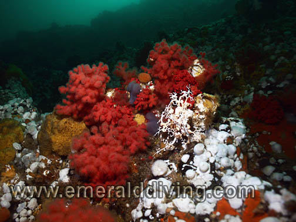

The south end of the "Tart" at 80 feet deep
GOD'S POCKET BAY
The little bay for which God’s Pocket Resort is named can offer a wonderful dive. But it can also be a real stinker. I have had numerous wonderful encounters with giant Pacific octopus in this bay during night dives. Puget Sound king crabs are usually found on the rocky walls on the south side of the bay. During certain times of year, giant nudibranchs (Dendronotus iris) of both white and red color show up to hunt tube dwelling anemones. In late spring, huge lion nudibranchs colonize the kelp clinging to the south wall of the bay. Stubby squid, Pacific cod, ratfish, bay gobies - you just never know what you will find when perusing the silty bottom and rocky walls of the bay. There are certain times of year when the vis in the bay drops to awful. When this occurs, diving with a mask is optional. During this trip, the vis in the bay was off, although not horrid. I ended up only doing one night dive in the bay and not taking many pics as the water quality was poor. It was hard to convince myself to dive in the bay's mediocre vis when the vis was so outstanding everywhere else. Call me spoiled.
THE LIST OF SITES GOES ON AND ON...
Although the weather was unstable during this early April this trip, the winds subsisded just enough for us to get out to dive the three remote sites I have been dying to do - Hunt Rock, Nakwakto Rapids, and the sea lion dive in the Middle Group. It rained on and off for four of the five diving days during this trip. In fact, it snowed on us while at Nakwakto and one day in Browning Pass, which was actually kind of cool. While the weather was just on the good side of marginal, the underwater visibility was outstanding, ranging 50-70 feet at most sites. The notable exceptions were those sites being pounder by swell from recent storms - like Hunt Rock. At Hunt, we were “only” afforded 25-30 feet of visibility, although it opened up to 40+ at depth.
Honestly, I could go on and on about the diving here. Many of the other sites are on parr with those listed here - Northwest Passage, Barry Island, Ruth’s Rocks, Seven Tree Island, George’s Rock, the Themus Wreck - take your choice as they are all excellent dives. Like a vacation at God's Pocket Resort, my writings and photos really don't do any of these sites justice. You just need to experience it all for yourself.
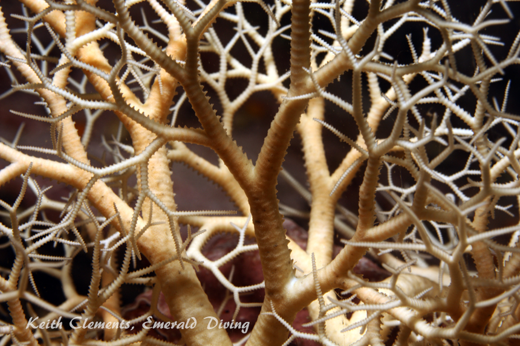
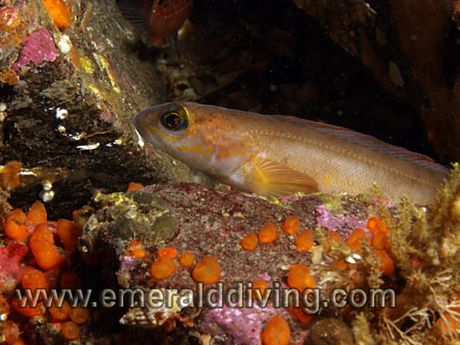
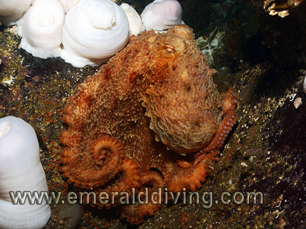
CONDITIONS
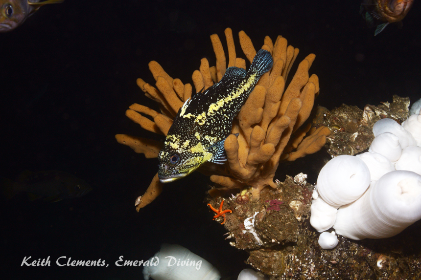
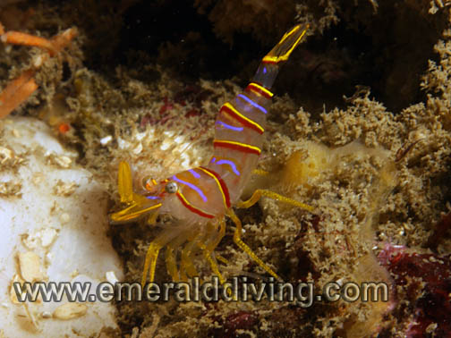
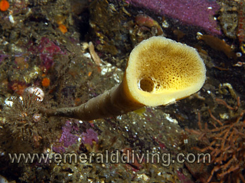
ARE YOU READY FOR THE EXPERIENCE?
If you are interested in chartering some dive time at God’s Pocket Resort, send Bill and Annie an email at info@godspocketresort.com. Tell them Keith Clements and Emerald Diving sent you - and hope Bill will not hold it against you.
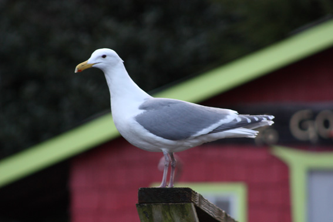
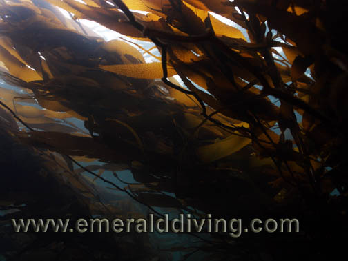
The Resort
Lingcod